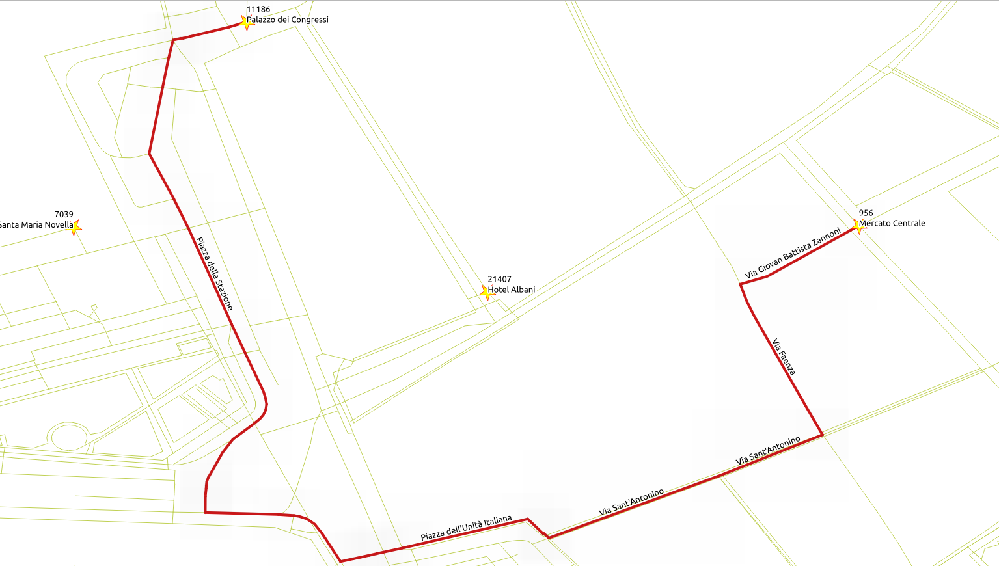
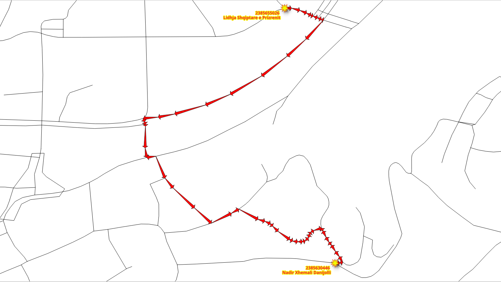
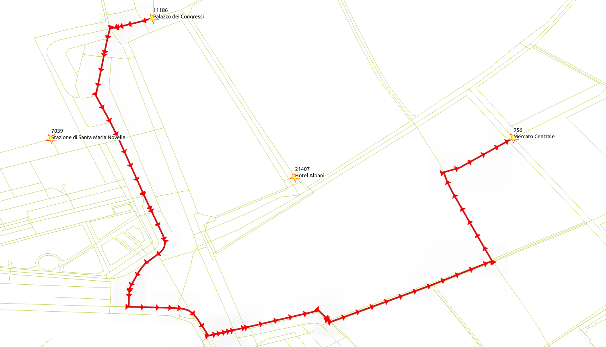
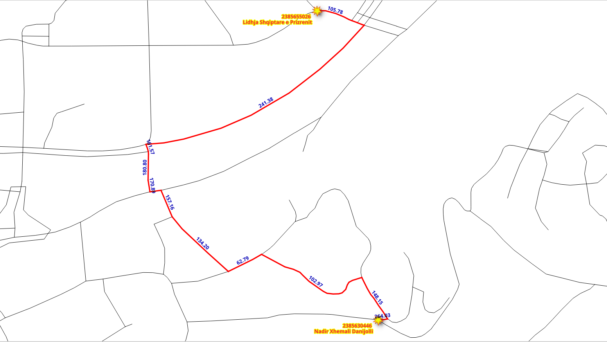

5. Función SQL¶

Las funciones pgRouting proporcionan una interfaz de bajo nivel.
Al desarrollar para una aplicación de nivel superior, los requisitos deben estar representados en las consultas SQL. A medida que estas consultas SQL se vuelven más complejas, es conveniente almacenarlas en funciones o procedimientos almacenados de postgreSQL. Los procedimientos o funciones almacenados son una forma eficaz de envolver la lógica de la aplicación, en este caso, relacionada con la lógica y los requisitos de ruteo.
5.1. Los requisitos de aplicación¶
- Una interfaz necesita la siguiente información de ruteo:
seq- Un identificador único de las filasid- El identificador del segmentoname- El nombre del segmentolength- La longitud del segmentoseconds- Cantidad de segundos para atravesar el segmentoazimuth- El azimut del segmentoroute_geom- La geometría de la rutaroute_readable- La geometría en forma legible para humanos.
Diseño de la función
La función wrk_dijkstra se creará con los siguientes parámetros de entrada y columnas de salida:
Parámetros de entrada
Parameter |
Tipo |
Descripción |
|---|---|---|
|
REGCLASS |
La tabla/vista que se utilizará para procesar |
|
BIGINT |
El identificador OSM de la ubicación de la salida. |
|
BIGINT |
El identificador OSM de la ubicación del destino. |
columnas de salida
Nombre |
Tipo |
Descripción |
|---|---|---|
|
INTEGER |
Un único número para cada fila de resultados. |
|
BIGINT |
El identificador de arista. |
|
TEXT |
El nombre del segmento. |
|
FLOAT |
El número de segundos que se tarda en atravesar el segmento. |
|
FLOAT |
El azimuth del segmento. |
|
FLOAT |
Longitud en metros del segmento. |
|
TEXT |
La geometría en forma humanamente legible. |
|
geometry |
La geometría del segmento en la dirección correcta. |
Nota
Para los siguientes ejercicios sólo se utilizará vehicle_net, pero usted puede probar las consultas con las otras vistas.
5.2. Manipulación de la información adicional¶
Cuando la aplicación necesita información adicional, como el nombre de la calle, JOIN los resultados con otras tablas.
5.2.1. Ejercicio 1: Obtener información adicional¶
{kind=link}

Problema
Desde Emily Place Reserve hasta Auckland University of Technology, utilizando identificadores OSM.
Obtener la siguiente información:
seqidnamesecondslength
Solución
Las columnas requeridas (línea 2).
Renombrar los resultados de
pgr_dijkstraa los nombres de requeridos por la aplicación. (línea 4).Se necesita un
LEFT JOINde los resultados convehicle_netpara obtener la información adicional. (línea 9)Tiene que ser
LEFTporque hay una fila conid = -1que no existe envehicle_net
1SELECT
2 seq, id, seconds, name, length
3FROM (
4 SELECT seq, edge AS id, node, cost AS seconds
5 FROM pgr_dijkstra(
6 'SELECT * FROM vehicle_net',
7 11045833969, 9451619540)
8 ) AS results
9LEFT JOIN vehicle_net USING (id)
10ORDER BY seq;
seq | id | seconds | name | length
-----+----+---------+------+--------
(0 rows)
5.3. Manejo de geometría¶
Desde el punto de vista de pgRouting, la geometría es parte de la información adicional, necesaria en los resultados para una aplicación. Por lo tanto JOIN los resultados con otras tablas que contienen la geometría y para su posterior procesamiento con funciones de PostGIS.
5.3.1. Ejercicio 2: Geometría de la ruta (legible para humanos)¶
Problema
Ruteo desde Emily Place Reserve hasta Auckland University of Technology
Además del ejercicio anterior, obtener
la geometría
geomen forma legible por humanos denominado comoroute_readable
Truco
WITH proporciona una manera de escribir instrucciones auxiliares en consultas más grandes. Se puede considerar como la definición de tablas temporales que existen solo para una consulta.
Solución
La consulta de ruteo llamada
resultsen una cláusula WITH. (líneas 2 a 5)Los resultados del ejercicio anterior. (líneas 8 y 9)
Nota
Para efectos de lectura de resultados, las columnas de resultados del anterior están en un comentario. Des-comentar para ver los resultados completos del problema.
La
geomprocesado conST_AsTextpara obtener la forma legible por humanos. (línea 12)Cambiando el nombre del resultado a
route_readable
El
LEFT JOINconvehicle_net. (línea 14)
1WITH
2results AS ( -- line 2
3 SELECT seq, edge AS id, node, cost AS seconds
4 FROM pgr_dijkstra('SELECT * FROM vehicle_net', 11045833969, 9451619540)
5)
6SELECT
7 -- from previous excercise
8 seq, -- line 8
9 -- id, seconds, name, length,
10
11 -- additionally get
12 ST_AsText(geom) AS route_readable --line 12
13FROM results
14LEFT JOIN vehicle_net USING (id) -- line 14
15ORDER BY seq;
seq | route_readable
-----+----------------
(0 rows)
5.3.2. Ejercicio 3: Geometría de ruta (formato binario)¶
{kind=link}

Problema
Ruteo desde Emily Place Reserve hasta Auckland University of Technology
Además del ejercicio anterior, obtener
geomen formato binario con el nombreroute_geom
Solución
Se utiliza la consulta del ejercicio anterior
La cláusula
SELECTtambién contiene:La
geom, incluido el cambio de nombre (línea 9)
1WITH results AS (
2 SELECT seq, edge AS id, node, cost AS seconds
3 FROM pgr_dijkstra('SELECT * FROM vehicle_net', 11045833969, 9451619540)
4 )
5SELECT
6 -- from previous excercise
7 seq,
8 -- id, seconds, name, length, ST_AsText(geom) AS route_readable,
9
10 -- additionally get
11 geom AS route_geom
12FROM results
13LEFT JOIN vehicle_net
14 USING (id)
15ORDER BY seq;
seq | route_geom
-----+------------
(0 rows)
5.3.3. Ejercicio 4: Direccionalidad de la geometría de la ruta¶
{kind=link}

Visualmente, con la ruta mostrada con flechas, se puede ver que hay flechas que no coinciden con la direccionalidad de la ruta.
Para tener una direccionalidad correcta, el punto final de una geometría debe coincidir con el punto inicial de la geometría siguiente
Inspeccionando el detalle de los resultados de Ejercicio 2: Geometría de la ruta (legible para humanos)
Las filas 59 a 61 no coinciden con ese criterio
WITH
results AS (
SELECT seq, edge AS id, node, cost AS seconds
FROM pgr_dijkstra('SELECT * FROM vehicle_net', 11045833969, 9451619540)
),
compare AS (
SELECT seq, id, lead(seq) over(ORDER BY seq) AS next_seq,
ST_AsText(ST_endPoint(geom)) AS id_end,
ST_AsText(ST_startPoint(lead(geom) over(ORDER BY seq))) AS next_id_start
FROM results LEFT JOIN vehicle_net USING (id)
ORDER BY seq)
SELECT * FROM compare WHERE id_end != next_id_start;
seq | id | next_seq | id_end | next_id_start
-----+----+----------+--------+---------------
(0 rows)
Problema
Ruteo desde Emily Place Reserve hasta Auckland University of Technology
Para arreglar la direccionalidad de las geometrías del ejercicio anterior
geomen forma legible por humanos nombrado comoroute_readablegeomen formato binario con el nombreroute_geomAmbas columnas deben tener la geometría corregida para la direccionalidad.
Solución
Para obtener la dirección correcta, algunas geometrías deben invertirse:
Invertir una geometría dependerá de la columna
nodede la consulta a dijkstra (línea 2)Una instrucción condicional
CASEque devuelve la geometría en forma legible por humanos:De la geometría cuando
nodees la columnasource. (línea 11)De la geometría invertida cuando
nodeno es la columnasource. (línea 12)
Una instrucción condicional
CASEque devuelve:La geometría cuando
nodees la columnasource. (línea 17)La geometría invertida cuando
nodeno es la columnasource. (línea 16)
1WITH results AS (
2 SELECT seq, edge AS id, node, cost AS seconds
3 FROM pgr_dijkstra('SELECT * FROM vehicle_net', 11045833969, 9451619540)
4 )
5SELECT
6 -- from previous excercise
7 seq,
8 -- id, seconds, name, length,
9
10 -- fixing the directionality
11 CASE
12 WHEN node = source THEN ST_AsText(geom)
13 ELSE ST_AsText(ST_Reverse(geom))
14 END AS route_readable,
15
16 CASE
17 WHEN node = source THEN geom
18 ELSE ST_Reverse(geom)
19 END AS route_geom
20
21FROM results
22LEFT JOIN vehicle_net USING (id)
23ORDER BY seq;
seq | route_readable | route_geom
-----+----------------+------------
(0 rows)
Inspeccionando algunas de las filas problemáticas, se ha corregido la direccionalidad.
WITH
results AS (
SELECT seq, edge AS id, node, cost AS seconds
FROM pgr_dijkstra('SELECT * FROM vehicle_net', 5661895682, 10982869752)
),
fix AS (
SELECT seq, id,
CASE
WHEN node = source THEN geom
ELSE ST_Reverse(geom)
END AS geom
FROM results LEFT JOIN vehicle_net USING (id)
),
compare AS (
SELECT seq, id, lead(geom) over(ORDER BY seq) AS next_id,
ST_AsText(ST_endPoint(geom)) AS id_end, ST_AsText(ST_startPoint(lead(geom) over(ORDER BY seq))) AS next_id_start
FROM fix
ORDER BY seq)
SELECT * FROM compare WHERE id_end != next_id_start;
seq | id | next_id | id_end | next_id_start
-----+----+---------+--------+---------------
(0 rows)
5.3.4. Ejercicio 5: Uso de la geometría¶
{kind=link}

Hay muchas funciones de geometría en PostGIS, el taller ya cubrió algunas de ellas como ST_AsText, ST_Reverse, ST_EndPoint, etc. Este ejercicio hará uso de una función adicional ST_Azimuth.
Problema
Modificar la consulta del ejercicio anterior
Además, obtener el azimut de la geometría correcta.
Dado que
vehicle_net``y las otras 2 vistas son subgráfos de ``ways, realizar elJOINconways.
Solución
Mover la consulta que obtiene la información adicional dentro la cláusula
WITH.Asignar el nombre
additional. (línea 6)
El nombre de la geometría de la tabla
waysesthe_geom.Las instrucciones
SELECTfinales obtienen:Calcula el azimut de
route_geom. (línea 27)
WITH
results AS (
SELECT seq, edge AS id, node, cost AS seconds
FROM pgr_dijkstra('SELECT * FROM vehicle_net', 11045833969, 9451619540)
),
additional AS (
SELECT
seq, id, seconds, name, length,
CASE
WHEN node = source THEN ST_AsText(the_geom)
ELSE ST_AsText(ST_Reverse(the_geom))
END AS route_readable,
CASE
WHEN node = source THEN the_geom
ELSE ST_Reverse(the_geom)
END AS route_geom
FROM results
LEFT JOIN ways ON (gid = id)
)
SELECT
seq,
-- from previous excercise
-- id, seconds, name, length, route_readable, route_geom
degrees(ST_azimuth(ST_StartPoint(route_geom), ST_EndPoint(route_geom))) AS azimuth
FROM additional
ORDER BY seq;
seq | azimuth
-----+---------
(0 rows)
5.4. Crear la función¶
La siguiente función simplifica (y establece los valores por defecto) cuando se llama a la función del camino más corto de Dijkstra.
Advertencia
pgRouting utiliza una gran sobrecarga de funciones:
Evite crear funciones con un nombre de una función de enrutamiento pgRouting
Evite el nombre de una función para comenzar con pgr_, _pgr o ST_
5.4.1. Ejercicio 6: Función para una aplicación¶
Problema
Poner todo junto en una función SQL
nombre de función
wrk_dijkstraDebe funcionar para cualquier vista dada.
Permitir una vista como parámetro
Se puede utilizar una tabla si las columnas tienen los nombres correctos.
sourceytargetson en términos deosm_id.El resultado debe cumplir los requisitos indicados al principio del capítulo
Solución
La firma de la función:
Los parámetros de entrada son de la línea 4 a 6.
Las columnas de salida van de la línea 7 a 14 (sin resaltar).
La función devuelve un conjunto. (línea 16)
-- DROP FUNCTION wrk_dijkstra(regclass, bigint, bigint);
CREATE OR REPLACE FUNCTION wrk_dijkstra(
IN edges_subset REGCLASS,
IN source BIGINT, -- in terms of osm_id
IN target BIGINT, -- in terms of osm_id
OUT seq INTEGER,
OUT id BIGINT,
OUT seconds FLOAT,
OUT name TEXT,
OUT length_m FLOAT,
OUT route_readable TEXT,
OUT route_geom geometry,
OUT azimuth FLOAT
)
RETURNS SETOF record AS
El cuerpo de la función:
Anexar el nombre de la vista en la línea 7 en la consulta
SELECTapgr_dijkstra.Usar los datos para obtener la ruta de
sourceatarget. (línea 8)El
JOINconwayses necesario, ya que las vistas son un subconjunto deways(línea 25)
$BODY$
WITH
results AS (
SELECT seq, edge AS id, cost AS seconds,
node
FROM pgr_dijkstra(
'SELECT * FROM ' || edges_subset,
source, target)
),
additional AS (
SELECT
seq, id, seconds,
name, length_m,
CASE
WHEN node = source THEN ST_AsText(the_geom)
ELSE ST_AsText(ST_Reverse(the_geom))
END AS route_readable,
CASE
WHEN node = source_osm THEN the_geom
ELSE ST_Reverse(the_geom)
END AS route_geom
FROM results
LEFT JOIN ways ON (gid = id)
)
SELECT *,
degrees(ST_azimuth(ST_StartPoint(route_geom), ST_EndPoint(route_geom))) AS azimuth
FROM additional
ORDER BY seq;
$BODY$
LANGUAGE 'sql';
CREATE FUNCTION
5.4.2. Ejercicio 7: Uso de la función¶
Problema
Probar la función con las tres vistas
From the Emily Place Reserve to the Auckland University of Technology using the OSM identifier
Solución
Usar la función en la instrucción
SELECTEl primer parámetro cambia en función de la vista que se va a probar
Nombres de las calles de la ruta
SELECT DISTINCT name
FROM wrk_dijkstra('vehicle_net', 11045833969, 9451619540);
name
------
(0 rows)
Total de segundos pasados en cada calle
SELECT name, sum(seconds)
FROM wrk_dijkstra('taxi_net', 11045833969, 9451619540)
GROUP BY name;
name | sum
------+-----
(0 rows)
Obtener toda la información de la ruta
SELECT *
FROM wrk_dijkstra('walk_net', 11045833969, 9451619540);
seq | id | seconds | name | length_m | route_readable | route_geom | azimuth
-----+----+---------+------+----------+----------------+------------+---------
(0 rows)
Pruebe la función con una combinación de los lugares interesantes:
9451619540Auckland University of Technology60662678The Band Rotunda11045827672Four Points by Sheraton9452115611Sky tower11045833969Emily Place Reserve